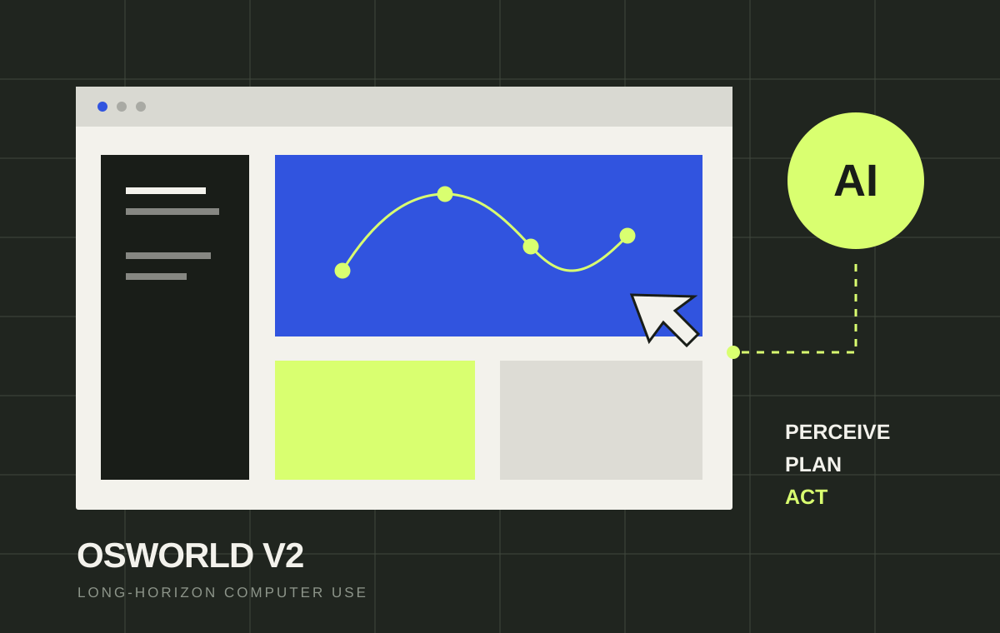

Vision-Language-Action Models视觉—语言—动作模型
Connecting visual perception, language understanding, and grounded action.
连接视觉感知、语言理解与真实环境中的动作执行。
Undergraduate Research Assistant · HKU XLang Lab 本科生研究助理 · 香港大学 XLang Lab
Exploring Vision-Language-Action Models, Computer-Using Agents, and Embodied AI.
探索视觉—语言—动作模型、计算机使用智能体与具身智能。
Undergraduate Research Assistant at HKU XLang Lab, supervised by Prof. Tao Yu. BASc in Applied Artificial Intelligence at The University of Hong Kong (2024–2028).
香港大学 XLang Lab 本科生研究助理，导师为陶宇教授。现就读于香港大学应用人工智能学士课程（2024–2028）。
I am an undergraduate researcher interested in building reliable and generalizable AI systems for embodied intelligence.
我是一名本科生研究者，致力于为具身智能构建可靠且具备泛化能力的 AI 系统。
My current research focuses on:
我目前的研究主要聚焦于：
Connecting visual perception, language understanding, and grounded action.
连接视觉感知、语言理解与真实环境中的动作执行。
Building agents that can reliably complete complex digital tasks.
构建能够可靠完成复杂数字任务的智能体。
Benchmarking capabilities across realistic, long-horizon settings.
在真实、长时程场景中评测模型能力。

Project visual placeholder项目视觉图占位The University of Hong Kong
香港大学
Open to research conversations 欢迎交流研究想法